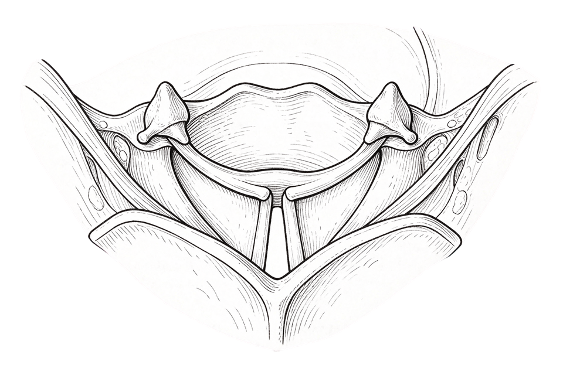

PCA
后环杓肌
唯一主要声带外展肌。使声带突向外侧移动，开放声门。
先看清真实结构，再理解它如何运动。这里聚焦杓状软骨、环状软骨、声带与喉内肌之间的关系，逐步学习声门开放、靠拢和张力调节。三维模型来自大学医学解剖教学项目，不用抽象几何体替代器官。
可在模型中拖动旋转、滚轮缩放，并使用模型自身的标注查看结构。建议先观察喉后部的杓状软骨与环杓关节，再转到前方观察甲状软骨和声带附着关系。
切换下列状态，右侧说明会更新。请同时旋转上方模型，寻找相应的软骨、肌肉和声带附着位置。
杓状软骨在环杓关节上外旋，声带突外移，声门开大——吸气时的主要形态。
后环杓肌是喉内肌中负责声带外展的唯一肌肉。它作用于杓状软骨的肌突，使杓状软骨在环杓关节上发生旋转，从而使声带突向外侧移动、声门开放。
上面的三维模型负责真实形态与空间关系，这两张静态线描负责把位置关系一次看清。先在模型里旋转找到结构，再回到图上确认。


下列内容描述主要作用，不代表肌肉在歌唱时单独工作。喉部运动来自多组肌肉的协同，且会随音高、响度、元音和发声方式变化。
唯一主要声带外展肌。使声带突向外侧移动，开放声门。
使杓状软骨旋转，声带突向中线靠近，参与声带内收。
横杓肌与斜杓肌使两侧杓状软骨靠近，参与声门后部闭合。
构成声带体的重要部分，影响声带长度、厚度、刚度和内侧缘形态。
使声带伸长、增加张力，参与音高调节；并非唯一的音高控制因素。
模型形态用于结构识别；肌肉功能说明以解剖学文献为依据。若模型标注与权威解剖资料存在差异，应以可靠医学资料为准并记录修订。
本实验室为歌唱教育用途，不提供医疗诊断。当前交互切换的是肌肉功能说明，联动的声门示意图只表示开合与张力的方向，不是经验证的三维生物力学仿真；模型中的肌肉不会随按钮改变形状或位置。声带真实振动涉及黏膜波、组织分层、气流与声道声学负载，后续只有在获得可验证的生物力学依据后才会加入相应模拟。